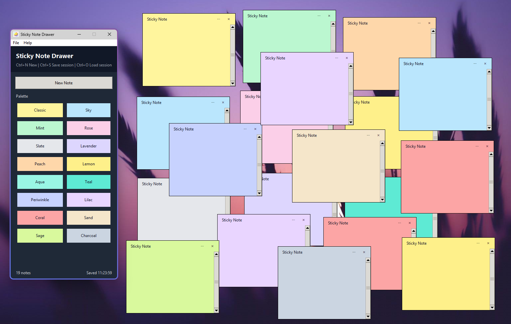
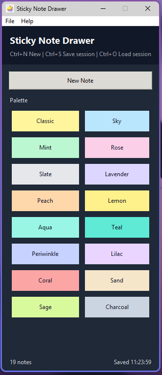
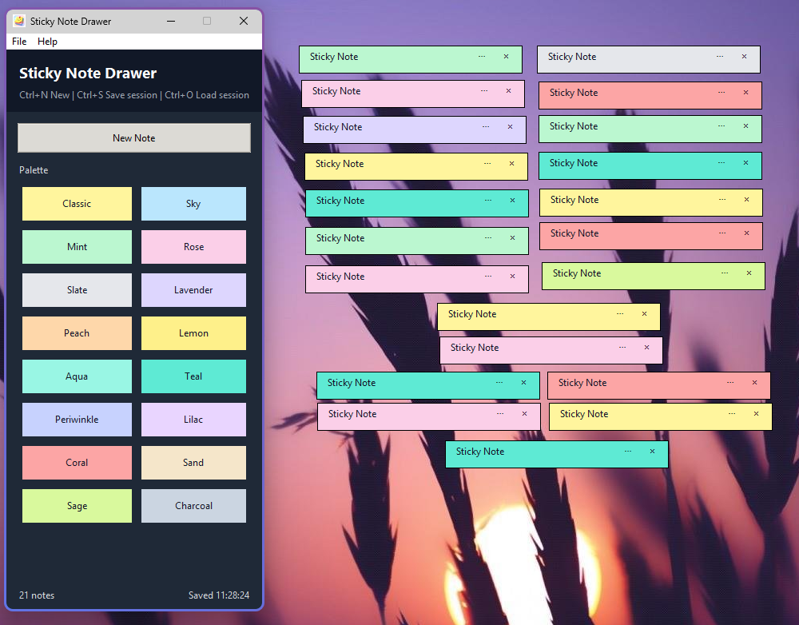

Desktop notes for Windows
StickyNotes
Keep the little things in sight.
Pin reminders, to-dos, and quick ideas to your desktop. Pick a color, move notes where you need them, and collapse them into title bars when you want more room.
Windows 10 and 11
A look at the app
Select any screenshot for a closer look.


Floating notes
Drag and resize notes around your desktop.


Color palette
Pick a color from the drawer to start a new note.


Collapsed notes
Double-click a note’s title bar to tuck it away.
StickyNotes in action
Watch the original desktop recording before you download.
Download StickyNotes
Run the setup file and open StickyNotes from the Start menu.
Download for Windows
StickyNotesSetup.exe · 13.5 MB